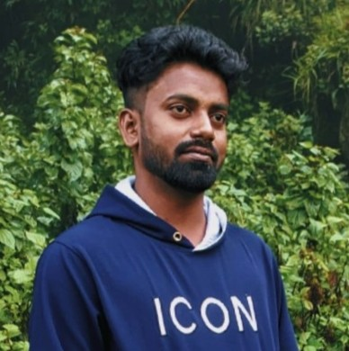

Sam Augustin Durai

Summary
Proven Project Manager with a successful three-year track record in the publishing industry.
Able to adapt to complex challenges, collaborate across teams, and consistently deliver projects
on time. Lauded for exceptional customer satisfaction, and acknowledged in several books as a
testament to my success.
Education
- B.Tech - Pondicherry University (2014-2018)
Work Experience
- Project Mangement Executive at Integra Software Solution
Nov 2021-Jul 2023
- Oversees all aspects of projects, including planning and organizing.
- Facilitates effective communication between all stakeholders involved in the project,
including the project team, clients, vendors, and other key stakeholders.
- Provides regular project status updates to stakeholders, including progress reports.
- Project Mangement Executive at Newgen Knowledgeworks
Jul 2023-Nov 2024
- Managed book production cycles: From acquisition of manuscripts to final delivery,
ensuring high-quality publications on time.
- Led cross-functional teams: Coordinated effectively with the project team, clients,
vendors, and key stakeholders to ensure seamless project execution.Facilitates effective
communication between all stakeholders involved in the project.
- Increased author satisfaction: Maintained clear communication with authors, managing
expectations and providing regular project updates.
Skills
- Adaptablity: ⭐️⭐️⭐️⭐️⭐️
- Decision Making:⭐️⭐️⭐️⭐️
- Problem-Solving ⭐️⭐️⭐️⭐️
- Time Management:⭐️⭐️⭐️
Others